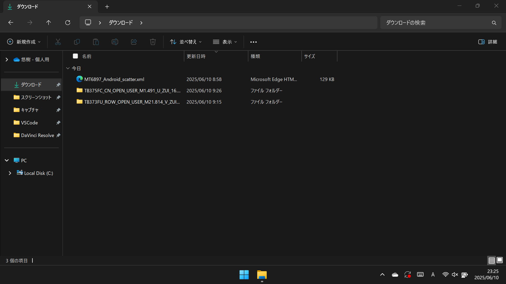
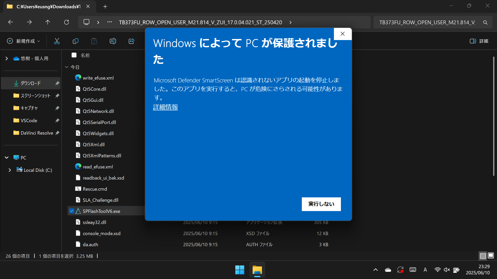
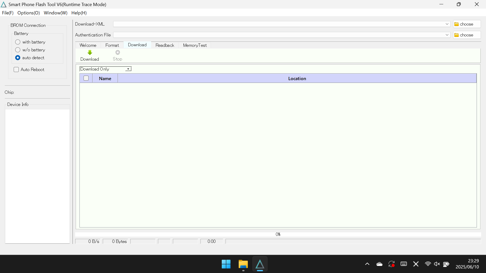
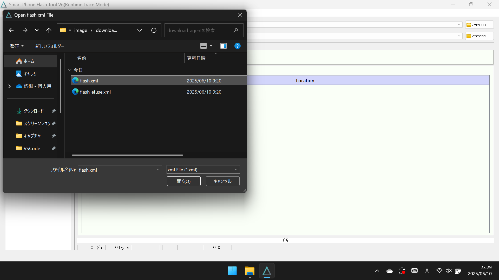
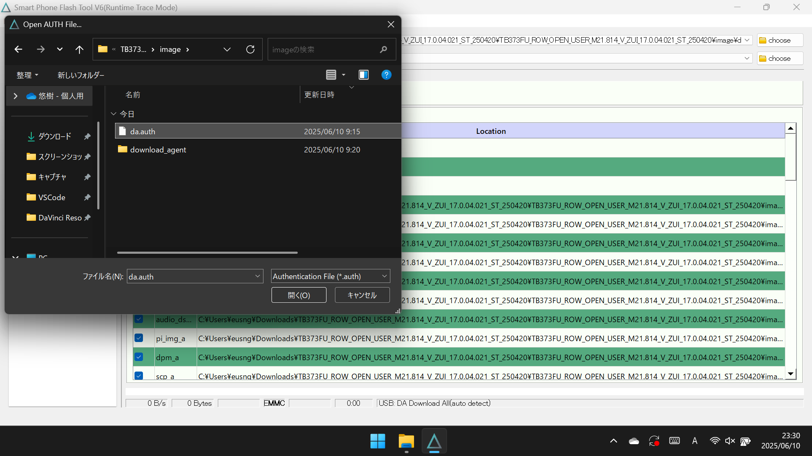
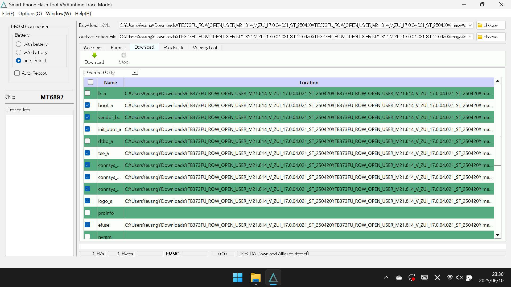
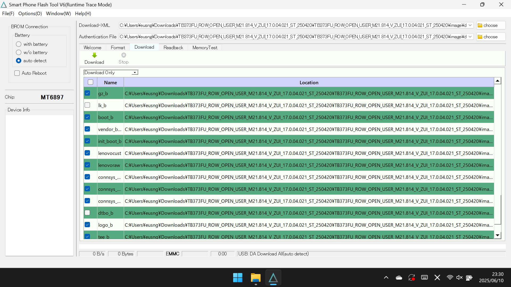
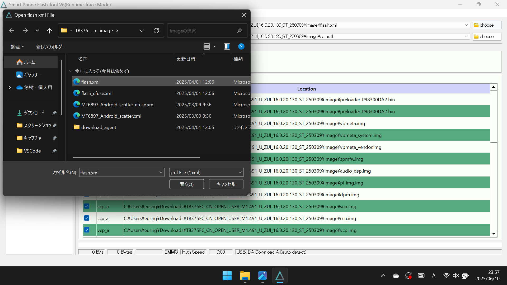
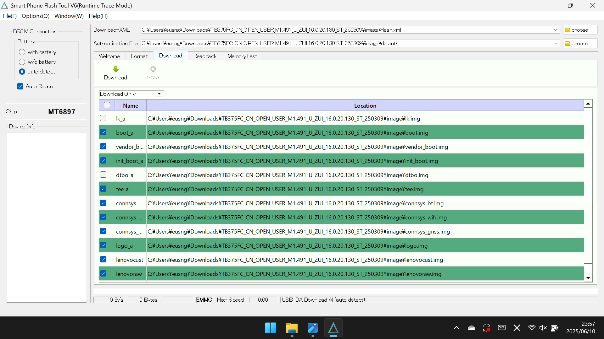

Xiaoxin Pad Pro 2025をグローバル化する方法

Xiaoxin Pad Pro 2025は中国版ZUIを搭載
Xiaoxin Pad Pro 2025はLenovoが販売しているミドルハイクラスのAndroidタブレットだ。 Dimensity 8300とミドルハイクラスのSoCを搭載しながらAliExpressで新品が3万円以下で購入できるコスパの良さで人気がある。 しかし、この機種は中国版ZUIを搭載している。 もちろんGMSは非搭載で中国向けアプリが標準搭載され、本体言語は英語と中国語しか選べず、通知やバックグラウンドの動作も安定しない。 adbコマンドで不完全ではあるものの日本語設定を適用したり、標準アプリをインストールしたり、apkからGoogleサービスを利用することもできるが、グローバル版のようには動作しない。 実はこの機種のグローバル版としてIdea Tab Proが日本でも展開されているが、定価が54,780円とXiaoxin Pad Pro 2025よりも割高になる。 そこで、Xiaoxin Pad Pro 2025にIdea Tab ProのROMを焼くことで、Xiaoxin Pad Pro 2025をグローバル化するという方法がある。 もちろん、グローバル化されたXiaoxin Pad Pro 2025は元のROMに戻すこともできる。 ここではその両方の方法を解説する。
目次
グローバル版のROMを焼く

ここでは中国版ROMがインストールされたXiaoxin Pad Pro 2025にグローバルROMを焼く方法を説明する。 グローバルROMを導入後、システムアップデートをする際も "8" の手順以外は同様に行う。
方法
1.Windows PCにadbを導入する
以下は導入方法である。
2.Windows PCにMTKドライバーをインストールする
以下のリンクからMTKドライバーをダウンロードし、インストールする。
3.Windows PCにscatterファイルをダウンロードする
以下のリンクからXiaoxin Pad Proのストレージ容量に合ったscatterファイルをダウンロードする。
4.Windows PCにIdea Tab ProのROMをダウンロードする
以下のリンクから導入したいバージョンのIdea Tab ProのROMをダウンロードする。
5.scatterファイルの名前を変更し、ROMのimageフォルダに移動する
ダウンロードしたscatterファイルのファイル名を
MT6897_Android_scatter.xmlと変更し、ダウンロードしたROMを展開してimageフォルダに移動する。



6.ROMのSP Flash Toolを起動する
ROMのルートディレクトリにあるSP Flash Toolを起動する。 "WindowsによってPCが保護されました" と表示されるが、 "詳細情報" から "実行" をクリックする。 その後表示される警告も "OK" をクリックする。




7.XMLファイルとda.authファイルを選択する
"Download-XML" の右の "choose" をクリックし、 "image\download_agent" にある "flash.xml" を選択する。 次に "Authentication File" の右にある "choose" をクリックし、imageフォルダにある "da.auth" を選択する。



8. "lk_a" , "lk_b" , "dtbo_a" , "dtbo_b" のチェックを外す
これらのチェックを外さないと、ROM焼き後に起動しなくなる可能性がある。 システムアップデート時は "userdata" のチェックを外すことで、初期化されずにアップデートできる。


9. "Auto Reboot" にチェックを入れる
必要があれば左上の "Auto Reboot" にチェックを入れる。 これによりROM焼き後に自動で再起動される。

10. "Download" をクリックする

11.Xiaoxin Pad Pro 2025をPreLoaderモードにする
Xiaoxin Pad Pro 2025の電源を切り、その後音量アップボタンを押しながらWindows PCにUSBケーブルで接続する。 ここでPreLoaderモードで正常に接続されると、ROM焼きが始まる。


12.ブートループした場合、初期化をする
ROM焼き後に "Can't load Android system." などと表示されてブートループを起こす場合がある。 その際は音量ボタンでカーソルを "Factory data reset" に合わせて電源ボタンで選択し、初期化する必要がある。 下の写真はXiaoxin Pad Proの画面ではないが、ブートループを起こした際は最終的にこのような画面で選択を迫られる。

グローバル版のROMのメリット
･日本語に正式に対応している
･GMSが標準搭載されている
･通知やバックグラウンドの動作が安定している
グローバル版のROMのデメリット
･OTAによるアップデートができなくなる
中国版のROMの焼き方
ここではグローバルROMがインストールされたXiaoxin Pad Pro 2025に中国版ROMを焼く方法を説明する。 グローバルROMを焼いたあとに元の中国版ROMに戻したくなった場合は以下の方法に従う。
方法
1.Windows PCにadbを導入する

2.Windows PCにMTKドライバーをインストールする
以下のリンクからMTKドライバーをダウンロードし、インストールする。
3.Windows PCにXiaoxin Pad Pro 2025のROMをダウンロードする
以下のリンクから導入したいバージョンのXiaoxin Pad Pro 2025のROMをダウンロードする。
4.ROMのSP Flash Toolを起動する
ROMのルートディレクトリにあるSP Flash Toolを起動する。

5.XMLファイルとda.authファイルを選択する
"Download-XML" の右の "choose" をクリックし、imageフォルダにある "flash.xml" を選択する。 次に "Authentication File" の右にある "choose" をクリックし、imageフォルダにある "da.auth" を選択する。



6. "lk_a" , "dtbo_a" のチェックを外す
これらのチェックを外さないと、ROM焼き後に起動しなくなる可能性がある。

7. "Auto Reboot" にチェックを入れる
必要があれば左上の "Auto Reboot" にチェックを入れる。 これによりROM焼き後に自動で再起動される。

8. "Download" をクリックする

9.Xiaoxin Pad Pro 2025をPreLoaderモードにする
Xiaoxin Pad Pro 2025の電源を切り、その後音量アップボタンを押しながらWindows PCにUSBケーブルで接続する。 ここでPreLoaderモードで正常に接続されると、ROM焼きが始まる。
10.ブートループした場合、初期化をする
ROM焼き後に "Can't load Android system." などと表示されてブートループを起こす場合がある。 その際は音量ボタンでカーソルを "Factory data reset" に合わせて電源ボタンで選択し、初期化する必要がある。 下の写真はXiaoxin Pad Proの画面ではないが、ブートループを起こした際は最終的にこのような画面で選択を迫られる。
中国版ROMのメリット
･OTAによるアップデートができる
中国版ROMのデメリット
･日本語に正式に対応していない
･GMSが標準搭載されていない
･通知やバックグラウンドの動作が安定しない
結局どちらのROMを選ぶべきなのか
このように標準搭載のGMSや完全な日本語設定、安定した動作を求めてグローバルROMを焼くことができるが、それにはOTAアップデートができなくなるという大きなデメリットが発生する。 もしOTAアップデートも含めて完全な動作を欲する場合、値段を気にしないならIdea Tab Proを購入することを推奨する。 この方法はグローバルROMを妥協して価格の安さを選び、Xiaoxin Pad Pro 2025を購入した人に対する救済措置のようなものである。
プロフィール

高度情報社会の最先端を駆け抜ける